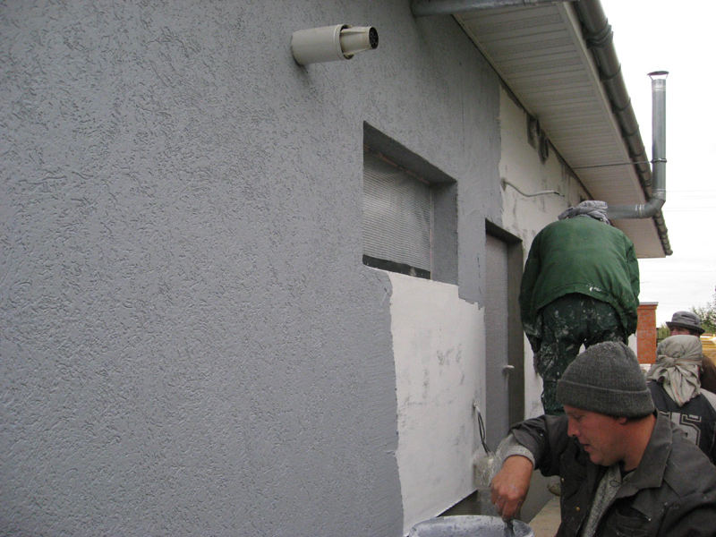
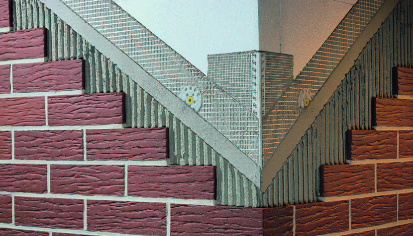

Штукатурка

На фото — оштукатуривание внешней стены
Оштукатуривание фасада выполняется с использованием смесей заводского и самостоятельного приготовления. Так, например, простейшим вариантом является штукатурка на основе цементно-песчаного раствора.
Такой способ отделки отличает доступная цена, простота нанесения, надежность и долговечность. Среди недостатков отметим непривлекательный вид. И, как следствие, необходимость в дополнительной отделке. Штукатурки с применением более сложных составов лишены недостатков, присущих смесям собственного приготовления.
Новые отделочные материалы и технологии оштукатуривания позволяют сделать фасад загородного дома или коттеджа максимально устойчивым к негативному воздействию факторов внешней среды. Кроме того, новые технологии позволяют штукатурить фасады, делая их эстетически привлекательными.
Облицовочная плитка

Плитка для облицовки экстерьера
Применение облицовочной плитки — это технология, апробированная временем и, тем не менее, не утратившая актуальности по сей день.
Отделка плиткой позволяет сделать фасад максимально защищённым от атмосферных осадков. Кроме того, керамогранит и клинкер превосходно выглядят. Это является важным преимуществом, как при облицовке солидного коттеджа, так и при отделке обычного загородного дома.
Плитка — это универсальное решение. Оно одновременно подходит для облицовки фасада, цоколя, дверных и оконных откосов. Несмотря на то, что инструкция укладки сложна и требует от исполнителей соответствующей квалификации, отделка экстерьера плиткой получает все большее распространение.